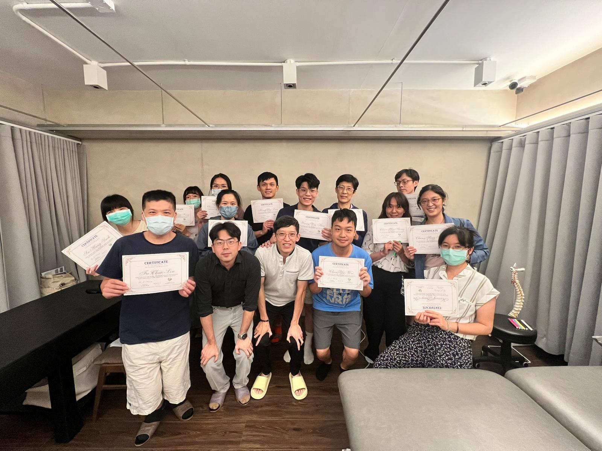
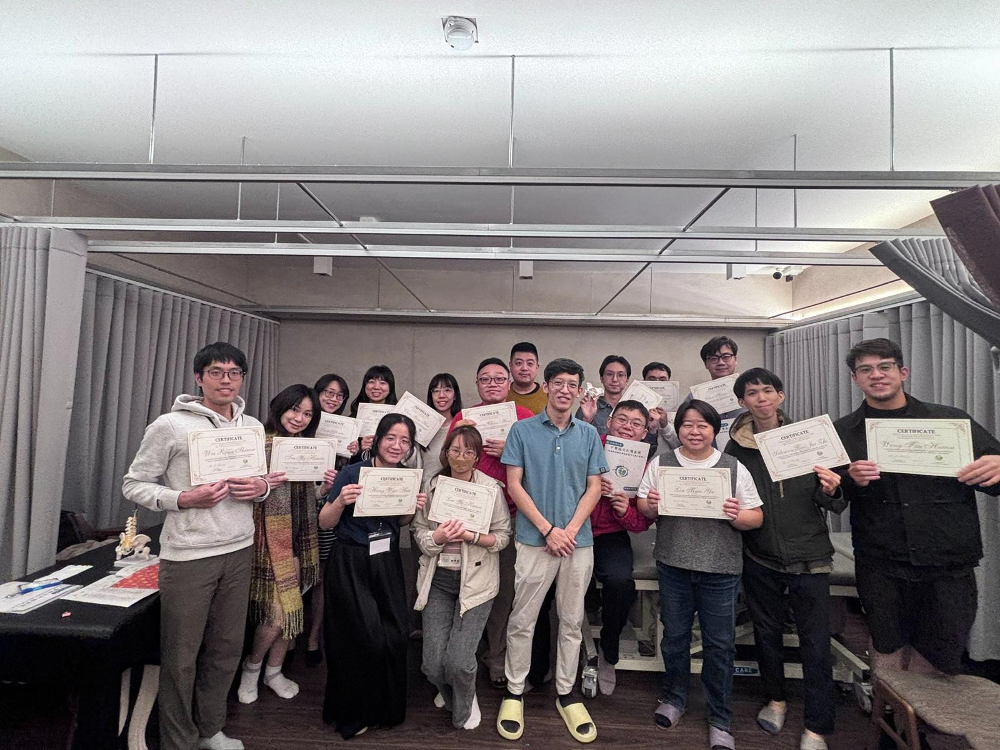
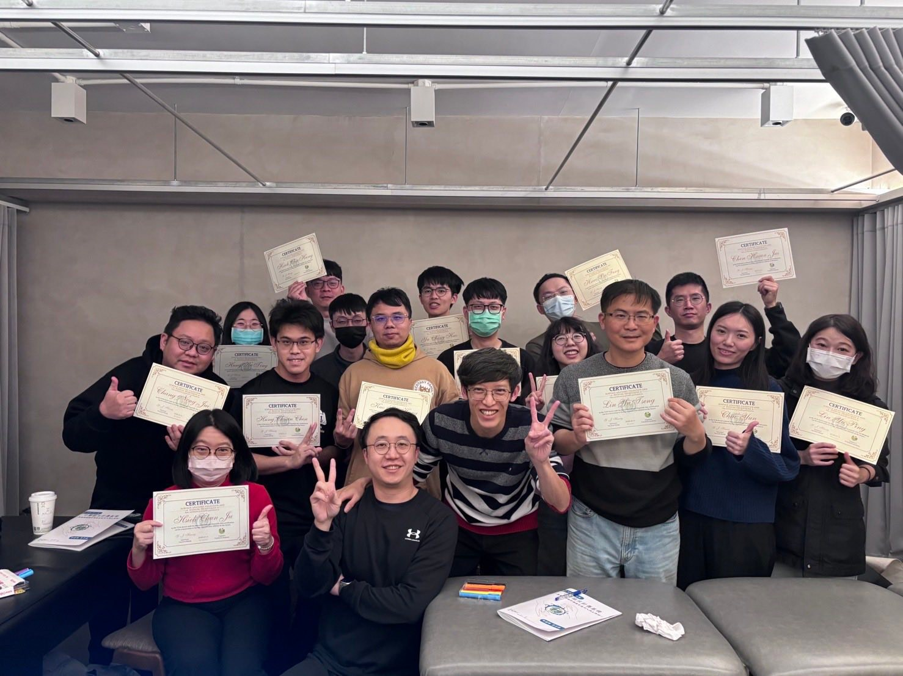

寫給當年的自己：關於觸診、徒手，與那一層層的解剖肌理
【寫給當年的自己：關於觸診、徒手，與那一層層的解剖肌理】
今天，我想在心裡為自己插上一支小旗幟，慶祝達成了一個人生里程碑🏆。
從 2025 年 6 月開始到今天，這半年的時間，完成了三個梯次的「表面解剖觸診與徒手入門工作坊」！
將近 50 位的參與者全數是中醫師，多數是年輕新一代的學弟妹，還有幾位資深學長姐願意撥冗前來互相切磋、學習，這份信任與交流，真的讓我既高興又榮幸！
說實話，這兩天的課程是一場「超級壓縮」的知識轟炸。
為了讓大家值回票價、體驗物超所值的內容，我有些私心地把大量的解剖細節、手法操作，還有必須親自動手的「人體畫記」硬生生塞好塞滿。雖然這往往讓大家在第二天下午都顯得眼神渙散、體力超出負荷😅😅😅，但我還是堅持要把最完整的地圖交給各位。
因為我知道，這些無比精實的內容，都是臨床上最關鍵的「基本功」。就像我自己這些年的體悟一樣，這些種子一旦在腦中消化、吸收、發芽後，原本獨立的知識點就會串聯成網，產生爆炸性的思維展開——這是我走過的路，也是我想帶給各位的風景。
非常感謝以正學長肌筋膜脈學中醫應用 當時推了我一把，也幫我大力宣傳，還記得那天跟學長聊天，他的一句話給了我很大的共鳴：
「人生無常，能自己站穩後，再來就看你想做什麼事，把握時間跟機會，做下去就是了！」
接下來的 2026 年，第四梯、第五梯已經在路上。籌辦這個工作坊，其實也是給學生時代的自己一個交代。我試圖把當年那些「如果早點遇到、早點學會就好了」的技術與觀念轉成現實，圓了自己心中的一個念想。
漣漪能起多大，那就順因隨緣，交給老天爺了。
回首這三梯次，我自問已全力以赴、問心無愧；感謝兩肋插刀義氣相挺的廖V與夏主任，幫我扛了不少負荷，真兄弟也！
也感謝所有曾經教過我的老師們，也感謝這三梯次參與的中醫師們，這段教學相長的旅程，受惠最多的可能還是我，透過沉澱、整合、輸出的過程，更是讓我重新看見了這些基本功的價值與深度，也讓我自己扎根扎的更深更踏實。
期許這份對中醫針傷/人體結構的探索熱情，能成為共同前行的動力，願大家在未來的臨床路上，透過雙手，走得更穩、更遠。
太初·初心苑
中醫師 黃彥鈞
#表面解剖觸診 與 #徒手入門 #教學心得 #人生里程碑 #2026繼續前行 #教學相長


